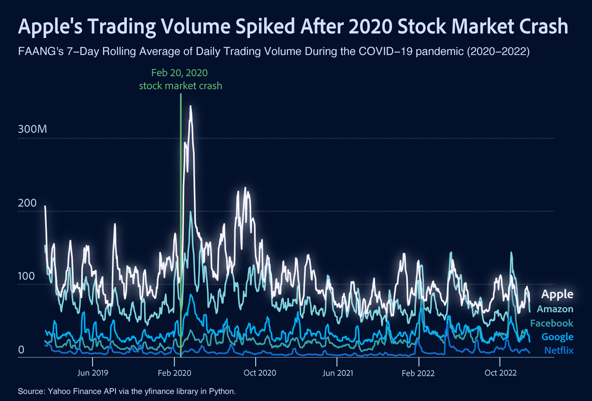

Markets in Motion: Uncovering FAANG Stock Trends in Uncertainty
by Ivy Zhuang
What’s FAANG?
In finance, FAANG is an acronym referring to the stocks of five prominent American technology companies: Meta (META) (formerly known as Facebook), Amazon (AMZN), Apple (AAPL), Netflix (NFLX); and Alphabet (GOOG) (formerly known as Google). The FAANG companies are seen as transformative leaders within their respective sectors, known for their powerful brand recognition and consistent attention from Wall Street. These companies are often viewed as benchmarks for innovation and growth in the tech sector, with products and services that have reshaped everything from how we communicate to how we shop, work, and consume media. They benefit from massive user bases, global reach, and strong financials, which together help explain why FAANG stocks attract so much investor attention. Over the years, these companies have come to symbolize the broader tech-driven momentum behind the U.S. stock market. Their stocks have generally outperformed the broader market.

Still, their journeys have not all looked the same. In times of crisis, markets don’t just wobble, they reveal. Economic downturns and disruptions rocked global equities, but within the chaos, some patterns emerged across the FAANG companies. Each responded to the uncertainty in different ways, reflecting underlying differences in business models, consumer demand, and investor expectations. Examining how their stock performances evolved over the past decade—especially during periods of disruption and recovery—offers a window into the varying degrees of resilience, adaptability, and long-term positioning among these industry leaders.
With that in mind, let’s take a look at how these companies fared during one of the most turbulent periods in recent memory—the COVID-19 pandemic.
Apple?
Among the FAANG companies, Apple’s stock performance over the past decade reveals a pattern of steady growth that contrasts with the sharper fluctuations seen elsewhere in the group. Even during periods of broader market uncertainty, its upward trajectory in average high trading price remained relatively smooth, suggesting a level of investor confidence grounded in consistent earnings, strong product ecosystems, and resilient global demand.
While Apple doesn’t consistently post the highest average peak stock prices, its performance stands out for its stability. Rather than dramatic spikes or steep drops, Apple’s stock price follows a more gradual and reliable climb. This suggests a long-term growth narrative supported by sustained consumer demand, disciplined management, and a strong brand ecosystem. In contrast to the volatility that characterizes some of its peers, Apple’s performance reflects a kind of quiet confidence—less reactive to short-term market swings, and more aligned with durable, strategic growth over time.
Netflix and Meta, while showing impressive rebounds after 2022, experienced far more turbulence during the height of the pandemic. Both companies saw rapid surges in value early on—Netflix benefiting from a boom in at-home entertainment, and Meta from increased digital advertising and social media engagement—but those gains proved difficult to sustain. Netflix faced mounting subscriber fatigue and growing competition in the streaming space, leading to sharp corrections. Meta, meanwhile, grappled with shifting user behavior, regulatory scrutiny, and challenges tied to its costly pivot toward the metaverse. Their quick recoveries reflect renewed investor optimism and strategic recalibrations, but the volatility in their trajectories during the pandemic suggests that their business models were more exposed to short-term shocks and shifting market sentiment than Apple’s.
With that, let’s take another look at the company’s trading volumes.
What’s happening now? And next?
As of April 2025, the ten largest companies on the list of S&P 500 companies accounted for approximately 35% of the market capitalization of the index and were, in order of highest to lowest weighting: Apple (6.4%), Microsoft (6.2%), Nvidia (6.0%), Amazon.com (3.8%), Alphabet (3.6%, including both class A & C shares), Meta Platforms (2.7%), Berkshire Hathaway (2.0%), Broadcom (1.8%), Tesla (1.6%), and JPMorgan Chase (1.4%).
This website was created as part of a class project for DATA 1500 (Data Visualization & Narrative), a Brown University course taught by Professor Reuben Fischer-Baum, an editor on the graphics team at the Washington Post. The charts are created using R and polished using Adobe Illustrator.
Here's a link.